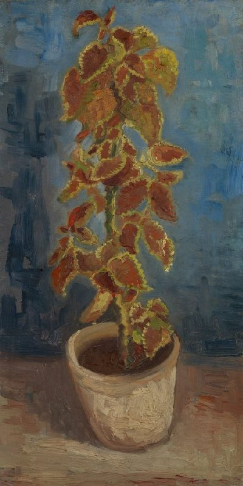

作品名 「植木鉢の炎イラクサ」
花言葉 「中傷」「悪口」「悪意」「残酷」「一致」「和合」
イラクサ
「中傷」
イラクサは、夏から秋にかけ、緑白色の雄花と淡緑色の雌花が咲きます。茎や葉の表面には毛のようなとげがあり、そのとげの基部にはアセチルコリンとヒスタミンを含んだ液体の入った嚢があり、とげに触れその嚢が破れて皮膚につくと強い痛みになる。
植木鉢の炎イラクサ
フィンセント・ファン・ゴッホ
ゴッホはこの植物の色彩を研究するために、イラクサを描きました。彼は「補色」と呼ばれる色彩を用いました。例えば、主に錆びたオレンジ色の葉は、対照的な背景の青と対になっています。また、植物の茎などには、時折、緑と赤のアクセントを意図的に隣り合わせに置いています。このような色の組み合わせは、フランスの画家ウジェーヌ・ドラクロワ（1798-1863）の色彩論の基本である。
| 作品名 | 植木鉢の炎イラクサ |
| 作者 | フィンセント・ファン・ゴッホ |
| 制作年 | 1886年 |
| 種類 | キャンバス・油彩 |
| 寸法 | 42.1cm×21.9cm |
| 所蔵 | ファン・ゴッホ美術館 |